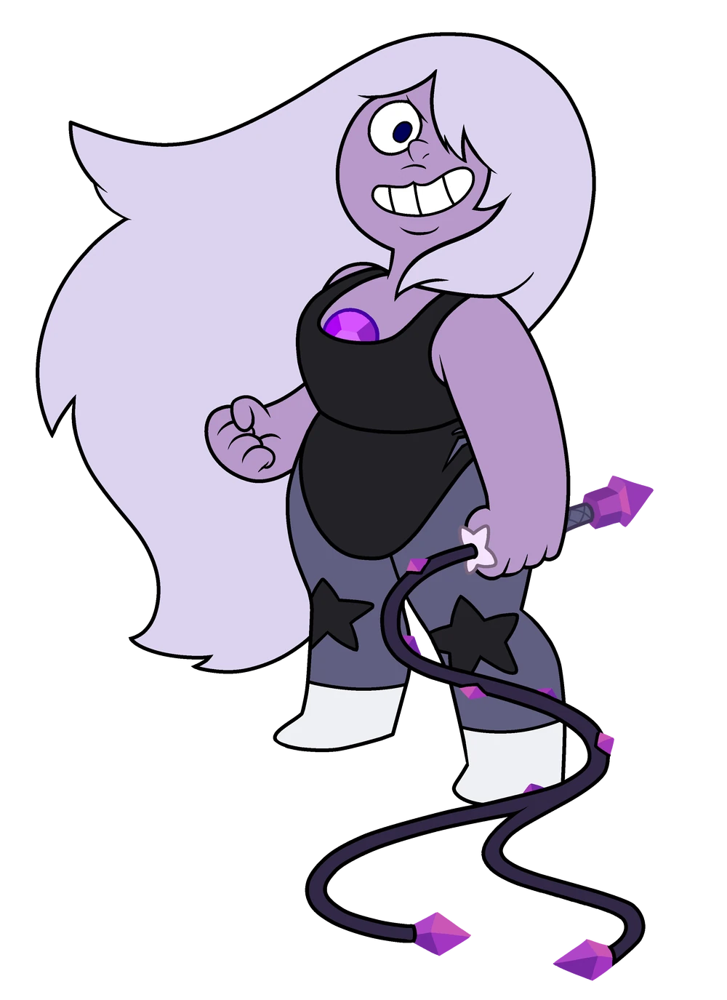

Steven Universo
Steven Universo é uma série animada que acompanha Steven, um garoto metade humano, metade "gem", criado por três Gems guerreiras chamadas Garnet, Ametista e Pérola. Juntos, eles protegem a Terra enquanto Steven aprende sobre seus poderes herdados de sua mãe, a lendária Rose Quartz. A série explora temas como identidade, amor, e aceitação, além de promover empatia e inclusão através de aventuras e conflitos emocionais. Conhecida pela abordagem sensível e inovadora, Steven Universo cativou o público com sua narrativa profunda, trilha sonora marcante, e representação de relacionamentos diversos.

Steven Quartzo Universo
Steven Quartz Universo é o personagem principal da série. Steven é o filho de Rose Quartz, a ex-líder das Crystal Gems, e passa a viver com elas. Ao mesmo tempo que convive com sua vida humana em Beach City, também convive com o mundo Gem, indo atrás de artefatos Gems, derrotando Gems Corrompidas e descobrindo sobre o passado das Gems do Planeta Natal, que tentaram colonizar a Terra.
Perola
A Pérola é uma gem do tipo pérola das Crystal Gems em Steven Universo e uma das protagonistas da série. Foi a primeira gem a participar ao lado de Rose Quartz na Rebelião pela defesa da Terra, tendo um grande amor por ela. Atualmente, é uma das mentoras do seu filho, Steven.
